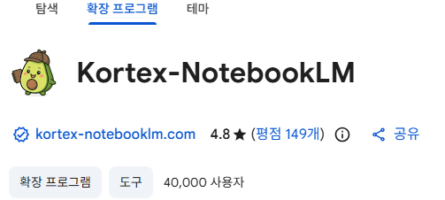
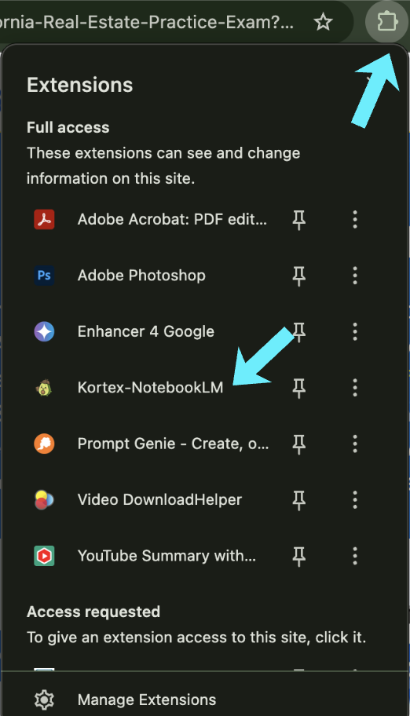
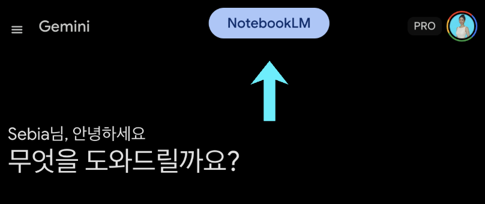
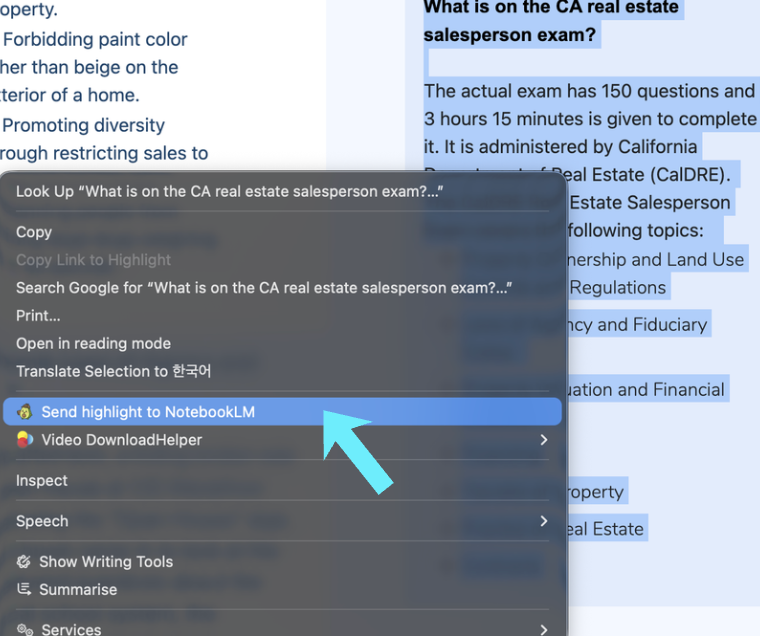
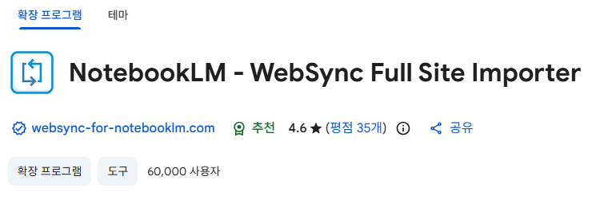

NotebookLM
노트북LM의 압도적인 성능은 결국 내가 먹인 '자료의 질'이 결정합니다.
크롬 확장 프로그램 'Kortex'나 'WebSync'를 설치해 보세요.
버튼 한 번이면 인터넷 속 유용한 정보와 영상들이 내 노트북LM 지식 창고로 쏙 들어갑니다.
자료 수집 시간이 최소 10배는 빨라질 거예요!
| 구분 | 🟣 Kortex (코텍스) | 🔵 WebSync (웹 싱크) |
|---|---|---|
| 핵심 강점 | 노트 관리, 파일 내보내기, 올인원 워크플로우 | 방대한 웹사이트 및 로그인 페이지 크롤링 |
| LLM 대화 연동 | ChatGPT, Claude 등 대화를 1클릭 아카이빙 | Gemini, ChatGPT 등 특화 처리 지원 |
| 유튜브 수집 | 기본 영상 지원 | 단일 영상, 플레이리스트, 검색 결과 통째로 |
| 웹사이트 수집 | 텍스트 하이라이트 전송, 단일 페이지 전송 | 로그인 보호 페이지, 전체 웹사이트 크롤링 |
| 추천 대상 | 자료를 엮고, 가공하고, 밖으로 빼내는 분 | 폐쇄적이거나 방대한 웹 문서를 통째로 넣을 분 |

단순한 자료 수집을 넘어, 노트북LM 안에서 자료를 관리하고 멋진 아웃풋을 뽑아내는 데 최적화된 파워 툴킷입니다.

1클릭 AI 대화 저장: ChatGPT, Claude, Gemini, Perplexity에서 나눈 유용한 대화를 클릭 한 번에 노트북LM의 출처(Source)로 완벽하게 저장합니다.

하이라이트 & 스나이프: 웹서핑 중 중요한 문구를 드래그하고 우클릭하면 즉시 노트북LM으로 전송됩니다.

ⓐ 강력한 내보내기 (Export): 대화 내역, 스튜디오 노트, AI가 생성한 요약본을 Markdown, PDF, Text, ZIP 등
원하는 형식으로 깔끔하게 다운로드할 수 있습니다.
ⓑ 오디오 & 팟캐스트 관리: 생성된 오디오 오버뷰를 관리하고, 나만의 팟캐스트 RSS 피드를 만들어 출퇴근길에 앱으로 들을 수 있습니다.
ⓒ 프롬프트 보관함: 자주 쓰는 프롬프트를 폴더와 태그로 정리하고 기기 간 클라우드로 동기화합니다.
ⓓ 소셜 미디어 임포트: 복잡한 스레드나 포스트를 작성자 정보와 URL 맥락까지 살려 그대로 가져옵니다.

WebSync는 노트북LM을 통해 뚫지 못하는 웹페이지를 수집하고, 노트북LM의 출처(Source)로 완벽하게 저장합니다.
가장 놀라운 강점은 '로그인'과 '동적 페이지'의 장벽을 허물어버리는 압도적인 크롤링 능력입니다.
ⓐ 통째로 긁어오기 (웹사이트 크롤링): 단순 링크 하나가 아니라, 웹사이트 전체의 관련 페이지를 모두 추적해 한 번에 수집합니다.
ⓑ 로그인 장벽 돌파: 내 브라우저에서 볼 수 있는 화면이라면, 로그인이 필요한 유료 기사나 사내 웹앱 등도 문제없이 수집 가능합니다.
ⓒ 유튜브 완벽 연동: 영상 하나뿐만 아니라, 특정 '재생 목록' 전체나 검색 결과까지 한 번에 노트북LM으로 동기화합니다.
ⓓ 자동 감지 및 맞춤 설정: 각 웹사이트의 특성을 스마트하게 감지하며, 필요시 자바스크립트 상호작용까지 제어해 원하는 콘텐츠만 깔끔하게 뽑아냅니다.
ⓓ 다중 계정 & 디테일 리포트: 여러 구글 계정을 지원하며, 자료가 어떤 경로로 어떻게 수집되었는지 상세한 크롤링 리포트를 제공합니다.